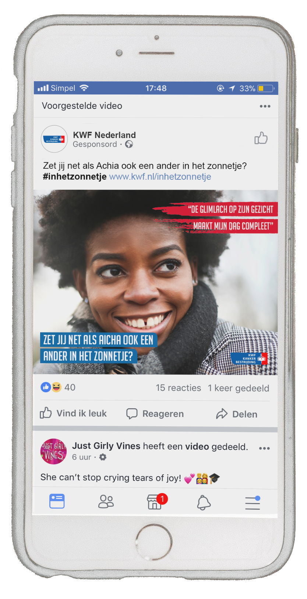
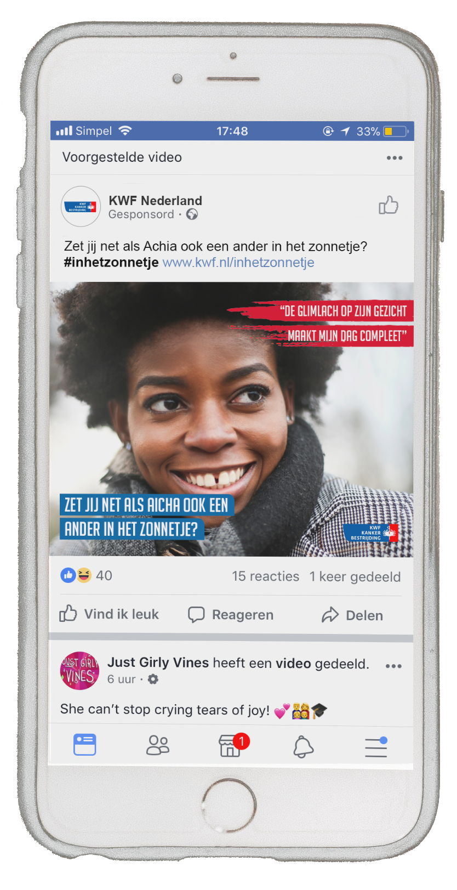
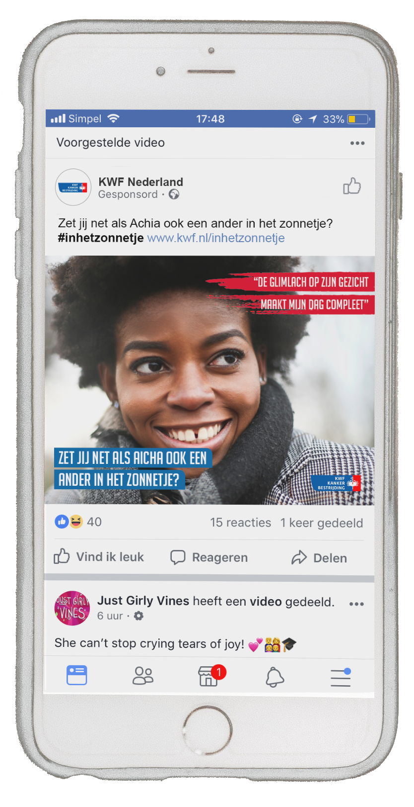
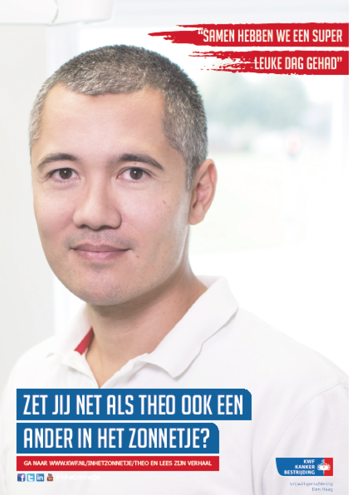
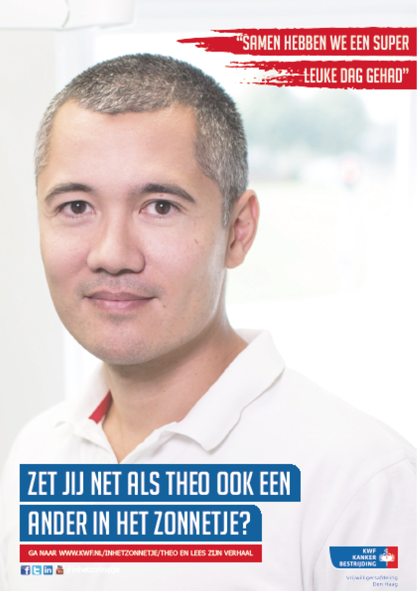
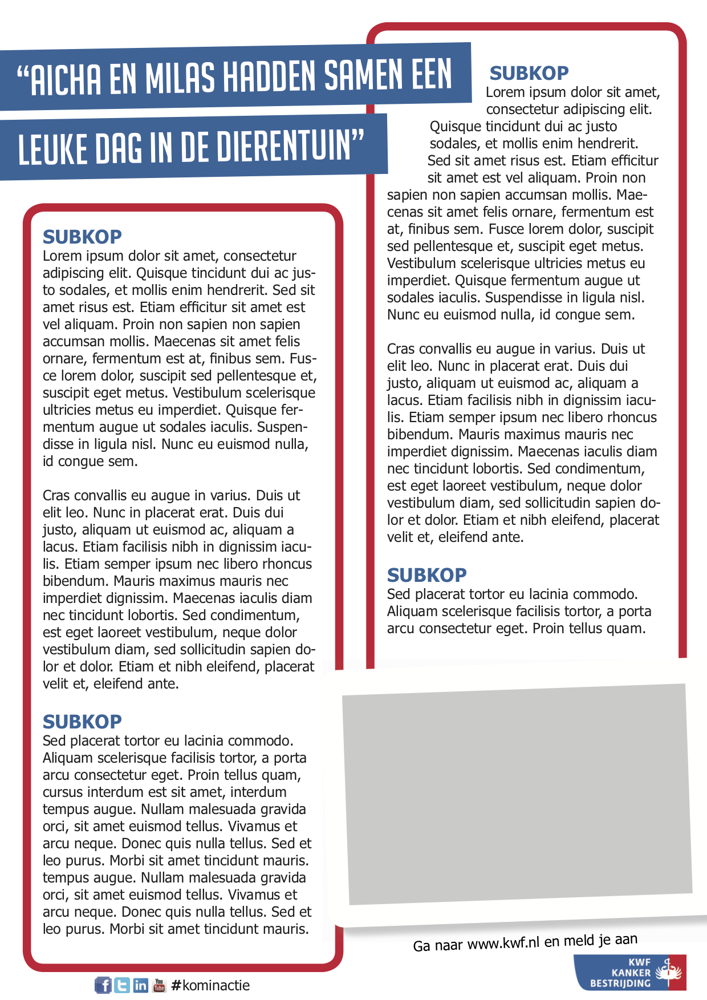
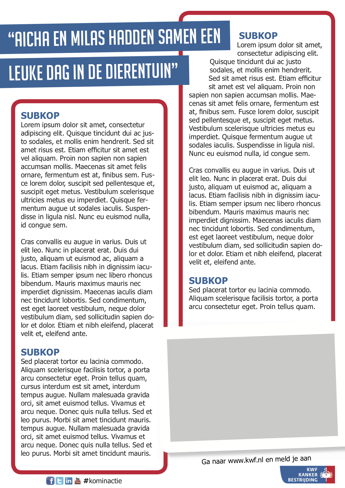
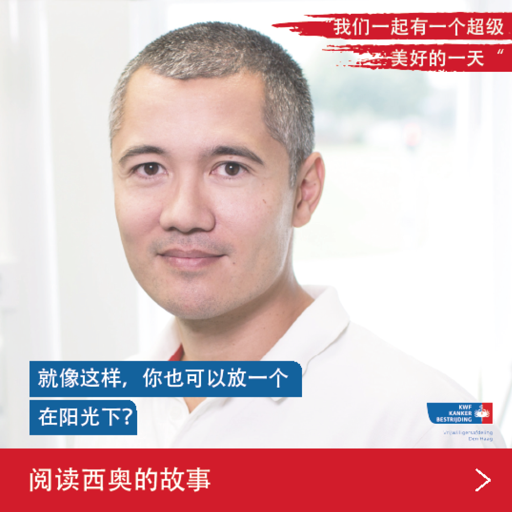
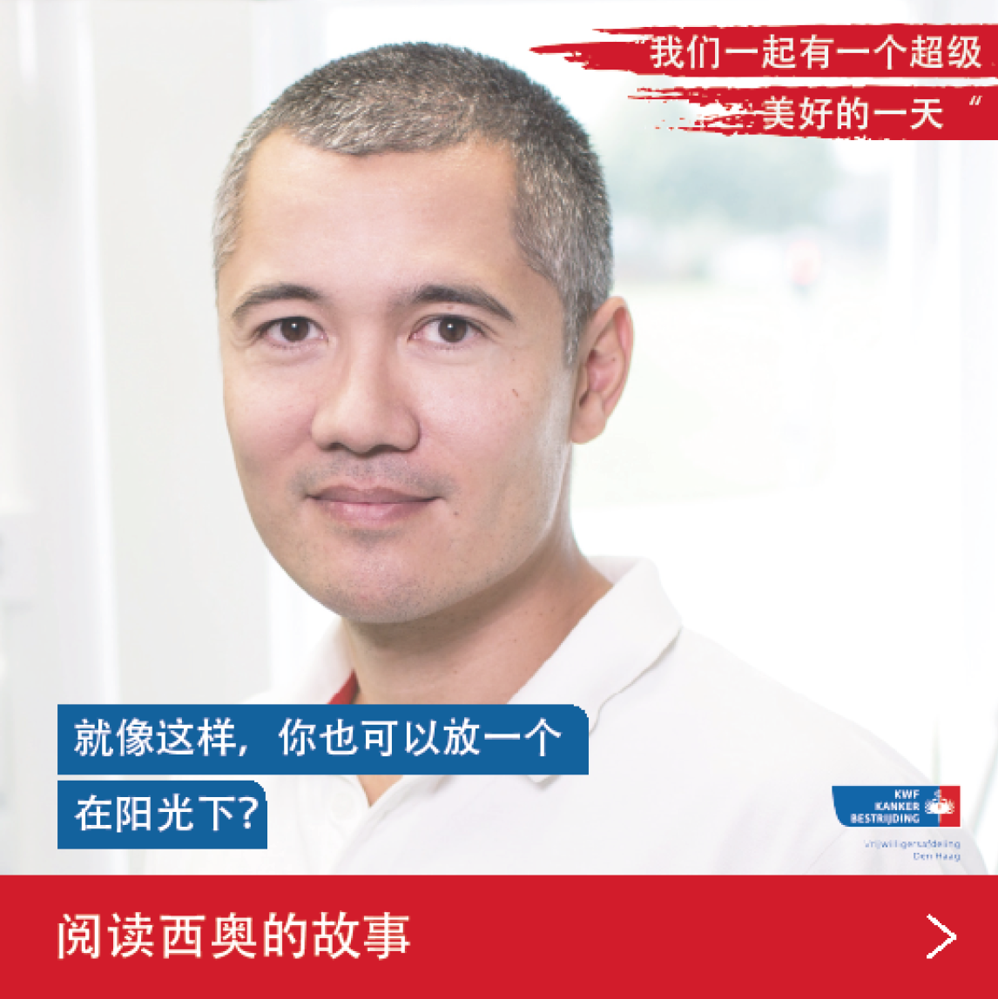

KWF Kankerbestrijding
For the course ‘Designing for communities’ was this project done. The assignment was to make an campagne for KWF kankerbestrijding that will convince people to became volunteers.
 

For the course ‘Designing for communities’ was this project done. The assignment was to make an campagne for KWF kankerbestrijding that will convince people to became volunteers.

The KWF in The Hague doesn’t have enough volunteers. They need more people for the collection week in September, but also for other activities. Besides recruiting volunteers the KWF wants to make people more aware of the organization and it’s goals.
The goal is to increase the number of volunteers of KWF The Hague with at least 10%. Their intention is that the target group, residents of The Hague between the age of 25 and 65, start having a positief look towards the KWF and the ‘Request’ to becoming volunteers.
If more people start voluntering, more can be collected and other activities can be organized. As a result, more money is received, which means more research can be done. This is done with the goal of removing cancer from the world. More people are being cured and cancer patients get a better life.
The next user needs and wishes were obtained after interviewing the target group:
The concept for this campagne is ‘a day as volunteer’. The idea is to show the people how a day like this looks like. Emphasis is placed on how, you as volunteer, put someone in the spotlight. The campagne exist of different advertisements elements such as posters, flyers and social media where people from The Hague of different cultures and ages are pictured and telling about their day as volunteer. Some of these advertisments are also made in different languages, this way more people from the multicultural city can understand and relate with the stories. This gets the people curious which leaves a mark and makes them more familiar with KWF.
 



 



 
